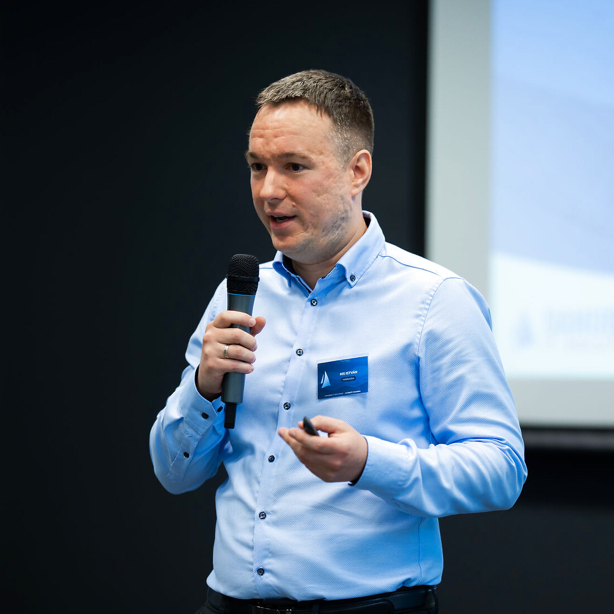

Rólam
Vezető vagyok és vezetőket, szakembereket segítek

Több mint 15 éve dolgozom a technológiai és pénzügyi világban: voltam rendszermérnök, középvezető, VP és menedzsmenttag egyaránt. Kezeltem többmillió eurós büdzsét, építettem csapatokat nulláról és fejlesztettem tovább adott poolból, valamint számtalan nehéz döntést hoztam már nyomás alatt.
Közben rájöttem valamire: a legnagyobb különbséget nem a folyamatok vagy a technológia hozzák, hanem az emberek, és az, ahogyan gondolkodnak, döntenek. A legjobb csapatokat és eredményeket mindig ott láttam, ahol az emberek látták a célt, hittek benne, és közben bíztak önmagukban is.
Ezért vágtam bele a coachingba és a tanácsadásba. Ma arra törekszem, amit a legfontosabbnak tartok: segíteni az embereknek, hogy tisztábban lássanak, jobb döntéseket hozzanak, és úgy érjenek el eredményeket, hogy közben önmaguk maradnak.
Ha a végzettség fontos neked, akkor megemlítem: mérnök informatikus vagyok, majd több mint 10 év vezetést követően egy MBA-t is elvégeztem. Jelenleg ICF PCC szintű coachvizsgát csinálok, miközben aktívan igyekszem segíteni a vezetők fejlődését.
Neked mire lenne szükséged?